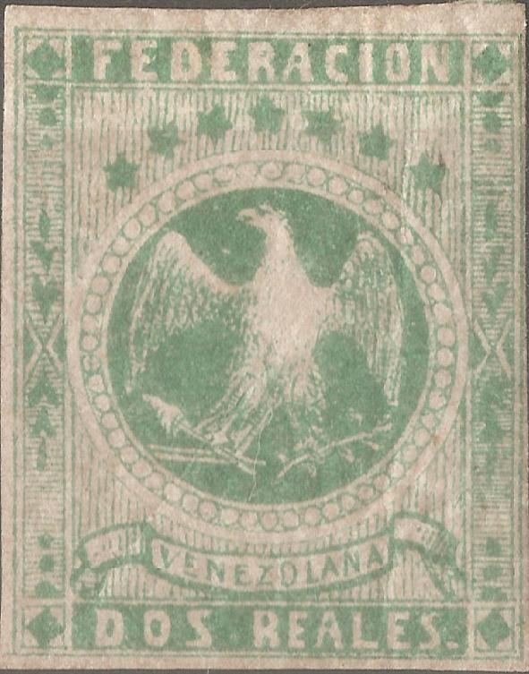
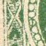
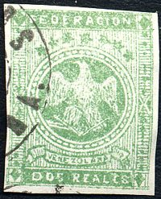
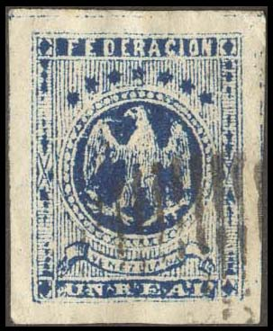
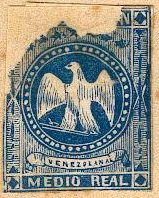
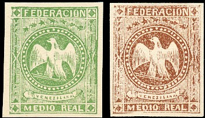
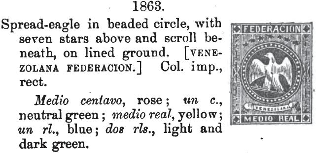
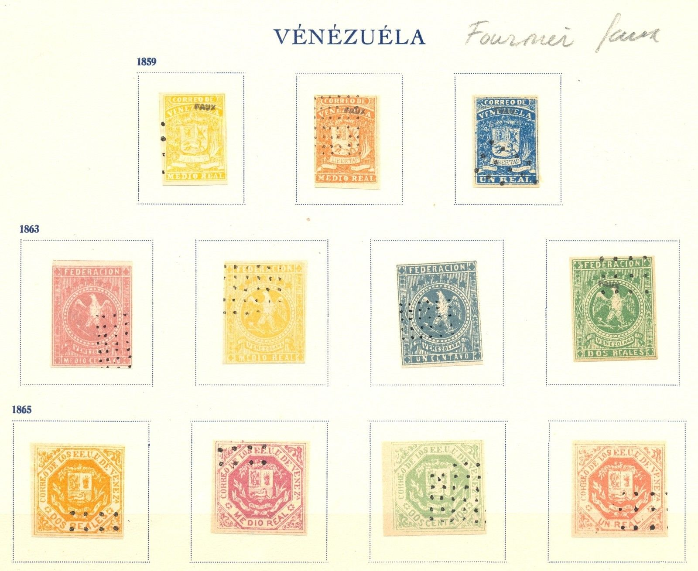

{kind=link}

Genuine stamps
Return To Catalogue - Venezuela - miscellaneous
Note: on my website many of the
pictures can not be seen! They are of course present in the
catalogue;
contact me if you want to purchase it.
Check out the excellent website on Venezuelian stamps, its locals and forgeries http://www.mystamps.net, made by Williams Castillo. I would like to thank him for setting some of the information available to me.

Genuine stamps
There are 13 different kind of forgeries known. How to recognize genuine stamps? All values have a different number of pearls around the circle containing the eagle (see table below).
| value | Nbr of pearls | Other characteristics |
1/2 c |
55 (56?) |
45 vertical lines behind the stars |
1 c |
57 |
43 vertical lines behind the stars |
1/2 r |
49 |
59 vertical lines behind the stars |
1 r |
52 |
45 vertical lines behind stars,
(all very waved) |
2 r |
53 |
51 vertical lines behind the stars  Secret line in one of the left pearls (see image above) The "R" of "REAL" is exactly underneath the "Z" of "VENEZOLANA". No ornaments next to the both end stars. The "S" of "REALES" looks like a "Z". Extreme right star nearer to frame than extreme left star. |

This cancel with dots was never used in Venezuela, any stamps with such postmarks can easily be recognized as forgeries. I have seen all five values of this particular forgery. There is no dot behind the value and there are no secret marks. Fournier also offers these forgeries in his 1914 pricelist as second choice forgeries for 1.25 Swiss Francs (all 5 values). These forgeries can also be found in 'the Fournier album of philatelic forgeries'. The 1 r forgery is also described in 'Focus on forgeries' by Varro E. Tyler. I've seen a whole sheet of 25 (5 x 5) forgeries of the 1 c value.

Sheet with Spiro forgeries.

A 1/2 r Spiro forgery with manual cancels added.



In this forgery the pearls of the circle are ellipses. This is an easy way to recognize it. Furthermore, the "D" of "FEDERACION" resembles a "O" and there are background lines between the label containing "VENEZOLANA" and the bottom part with the value. Finally there is no dot behind "DOS REALES" in the 2 r forgery. I've seen it with a large double ellipse cancel "CORREOS DE VENEZUELA", but also with a circular cancel.

(Reduced sizes)
The above forgeries have 52 pearls around the circle instead of 49, the "N" of "FEDERACION" is much wider than in the genuine stamps. This stamp is sometimes considered as a reprint. There is a dot in the highest pearl (the secret mark as in the genuine 1/2 r stamps). The central star is placed under the "RA" of "FEDERACION". Note that this stamps is referred to as 'genuine type 2' in Album Weeds. This forgery is only known in the value 1/2 r. There are many controversies about this stamp. Some say it is a genuine stamp some said it is a postal fake (to fool the postal authorities). Fact is that this stamp WAS really used in postal service.

Is this the same forgery?

There are 50 pearls in the circle in the above forgery (should be 52). The secret marks are absent. The birds head has a small dot at the back. The "R" of "REAL" is exactly below the "O" of "VENEZOLANA" (the "O" should be above the vertical stroke of the "R"). There is also a 1/2 r of this particular forgery.
Reduced size
There is no dot behind "REAL" in the above forgeries.
More information can be found on http://www.mystamps.net/venezuela/identificacion/aguilitas.html (in Spanish).

The stars have the very sharp tips and they almost hit the central circle. The cap of the liberty is very white. The left leg lacks feathers in the lower part.

(The central star is under the "R" of
"FEDERACION" instead of under "RA")
Forgeries of the 1 r value.
"VENEZULANA" forgeries:


Another forgery type of the 1 c stamp. They appear to be VF Cancelled forgeries.


(And another forgery type, these forgeries have inscription
"VENEZULANA" instead of "VENEZOLANA")




{kind=link}
{kind=link}